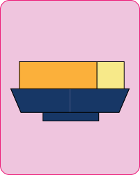

|  |
|
||
| Filling | Wet dough | Dry oil dough |
|---|---|---|
|
50 gr shredded coconut 20 gr yolk 20 gr butter, softened 20 gr powdered sugar |
100 gr low-gluten flour 10 gr solid lard 10 gr fine sugar for seasoning 40 ml water little food coloring |
65 gr flour 35 gr lard |

Place all filling ingredients on flat work surface and press the ingredients using the palm heel. And mix with a pastry scraper at the same time. Roll the mixture into a chunk, in a rectangular shape. Half it and then divide each half into five equal pieces. Take one piece and roll it into a ball and repeat the process for the rest. Put the balls into the freezer.
Put the flour, lard and sugar on flat work surface and make a well in the middle. Add the food colored water and roll the mixture. While rolling pay attention to use our palm heel to press. Now we use both hands to knead alternately. To make the dough softer and smoother we wait till the dough becomes waxy after kneading. Adjust its shape a little bit then cover it with a plastic wrap and let it rest. Lastly, we divide the dough into 10 even pieces.
Use the palm heel and pastry scraper as well. They should be fully mixed and you can’t see any dry powder in the final dough. Half the dough and roll each half into a long strip then cut each half into five equal pieces. Repeat with the other half. Roll each piece into a ball.
Pick one wet oil dough piece and roll a little bit and press it flat. Then fold the dry oil dough using the flat wet oild dough. Use a rolling pin to gently roll back and forth until it is 0.5cm thick. Fold the piece into 3 folds and roll till it's 0.5cm again. Make sure to not break the skin layers in this process! Repeat this process 3 times.

To fold the fillings, flatten the cake skin with our palm heel. Then, place our frozen filling balls in the center of the flatten skin. Enclose the the filling tightly with as little air as possible. Do this process quickly because defroseted fillings are difficult to fold! Finally, give the filling ball a little roll so that it is a sphere.
Now, let's start the most important part, styling! This is when we make the cake a lotus flower. The key is to have a sharp knife and use it to slice a cross on the cake balls we just created. Make sure that the cut goes deep enough to cut through the skin and reveal the filling.
Finally! It is time to make the magic happen! To make the cake edible, we can either fry the cake or bake the cake. If we fry it, it will look more flower like. And the key to frying it is to use vegetable oil or any oil that don't have a strong scent or smell. When frying, use spone to gentally move the cake so that it get evenly fried. Another important thing is to make sure to not break the fragile "flower pedals" when touching the cake.